In machine learning, perhaps the most popular way of doing black-box classification is logistic regression.
Say, we want to classify $28 \times 28$ black-and-white pictures of digits into one of 10 categories (0..9):

Computationally, it works like this. If we are working with $n$-dimensional data, which we need to classify into one of $m$ classes, then we multiply the input vector by a parameter matrix of size $n \times m$, and then apply a special “softmax” function to the output $m$-element vector:
$$ \operatorname{softmax}(x)_k = \frac{e^{x_k}}{\sum_{i=0}^{m-1} e^{x_i}} $$In other words, what this function does is it calculates elementwise exponent of its input vector and then normalizes it so that the elements add up to 1. Since the output has $m$ positive elements that add up to 1, it can be treated as a probability distribution that the sample belongs to a certain class. We can then look at the highest probability prediction and take it as the answer of the model.
We look at a large dataset of samples and fit our parameter matrix so that we get the most answers correct. We will not go into detail about how to fit it, but once we do, we need to run inference, that is, to feed it new data and get predictions.
This is pretty much all that a performance engineer needs to know about machine learning. For now, we are only concerned with the computational side of things.
float w[10][28*28];
// 784 x 10
int predict(const float *a) {
float s[10] = {0};
for (int k = 0; k < 10; k++)
for (int i = 0; i < 28*28; i++)
s[k] += a[i] * w[k][i];
// there is no problem with calculating exponent of small numbers,
// but exponent of large numbers may overflow
float mx = *std::max_element(s, s + 10);
float sumexp = 0;
for (int i = 0; i < 10; i++) {
s[i] = std::exp(s[i] - mx);
sumexp += s[i];
}
int argmax = 0;
for (int i = 0; i < 10; i++) {
s[i] /= sumexp;
if (s[i] > s[argmax])
argmax = i;
}
return argmax;
}
This isn’t exactly worth optimizing, because that’s just ~10k operations anyway, but our use case could be bigger. For example, neural networks are not fundamentally different: they just use longer chains of transformations, and not just matrix multiplication followed by a softmax.
This can also be used in a hot spot. For example, computer chess programs use similar models to determine the value of a position (the probability of winning). By the way, this is how the “1-3-3-5-9” heuristic arises: you can train a logistic regression on a large dataset of chess positions that are turned into piece count differences, and that’s what weights are going to look like. Score in other games works in a similar way.
The first thing we can notice is that we don’t actually need to implement softmax, because we can notice that the largest logit (this is how pre-softmax numbers are called) will be largest after the softmax, so we only need to take argmax after the matrix multiplication.
This is not just an approximation. The exponential function is strictly increasing, and division by the same positive number does not change the order of the elements:
$$ \underset{k}{\operatorname{argmax}}\; \frac{e^{z_k}}{\sum_i e^{z_i}} = \underset{k}{\operatorname{argmax}}\; z_k $$We have also omitted the bias vector from the model. It can either be added to the logits after the matrix multiplication or folded into the matrix by appending a constant $1$ to every input vector.
#Probabilities and Loss
Sometimes we need the probabilities themselves: for example, to reject uncertain predictions or to calculate the loss during training. Directly exponentiating the logits is not safe. A perfectly ordinary logit such as $1000$ already makes a single-precision exponent overflow.
Softmax is invariant under adding the same number to every logit:
$$ \frac{e^{z_k-c}}{\sum_i e^{z_i-c}} = \frac{e^{z_k} / e^c}{\sum_i e^{z_i} / e^c} = \frac{e^{z_k}}{\sum_i e^{z_i}} $$We can therefore choose $c = \max_i z_i$. The largest exponent is then exactly one, all others are between zero and one, and the denominator is between $1$ and $m$.
For the correct class $y$, the cross-entropy loss is
$$ L = -\log p_y = c - z_y + \log \sum_i e^{z_i-c} $$ Since the derivative of $\log \sum_i e^{z_i}$ with respect to $z_k$ is exactly $p_k$, its gradient with respect to a logit is $$ \frac{\partial L}{\partial z_k} = p_k - [k=y]. $$ Consequently, if $z_k = b_k + \sum_i w_{ki} x_i$, then $$ \frac{\partial L}{\partial w_{ki}} = (p_k - [k=y])x_i, \qquad \frac{\partial L}{\partial b_k} = p_k - [k=y]. $$After finding the maximum, the stable loss and the entire logit gradient can be calculated in two more passes. The function below overwrites the logits with that gradient:
float softmax_gradient(float *z, int m, int y) {
float shift = z[0];
for (int k = 1; k < m; k++)
shift = std::max(shift, z[k]);
float target = z[y];
float sum = 0;
for (int k = 0; k < m; k++) {
z[k] = std::exp(z[k] - shift);
sum += z[k];
}
float loss = shift - target + std::log(sum);
for (int k = 0; k < m; k++)
z[k] = z[k] / sum - (k == y);
return loss;
}
Binary logistic regression is the $m=2$ special case. If one of the logits is fixed at zero and the other is $z$, the probability of the second class is the sigmoid
$$ \sigma(z) = \frac{1}{1+e^{-z}}. $$Its usual formula overflows for a large negative $z$. Evaluating a different but equivalent expression on that half of the number line fixes it:
float sigmoid(float z) {
if (z >= 0)
return 1 / (1 + std::exp(-z));
float e = std::exp(z);
return e / (1 + e);
}
For a binary label $y \in {0, 1}$, cross-entropy simplifies to $\log(1+e^z)-yz$. Factoring out the larger of $0$ and $z$ gives the stable loss and its derivative:
$$ L = \max(z, 0) - yz + \log(1 + e^{-|z|}), \qquad \frac{\partial L}{\partial z} = \sigma(z) - y. $$Nobody in their sane mind uses C++ for training ML models.
#Quantization
Machine learning is one of the cases where we need neither range nor precision. The whole point of machine learning is to learn functions that are robust to small perturbations in data. The input data is noisy, so why shouldn’t our computations be? Plus, errors should cancel each other. We can also force the matrix parameters to be in a certain range.
Using lower precision has two advantages:
- It takes less time to fetch data.
- We can use SIMD instructions that pack more values together.
To quantize the model, we choose positive scale factors $s_x$ and $s_w$ and store nearby integers
$$ q_i \approx \frac{x_i}{s_x}, \qquad r_{ki} \approx \frac{w_{ki}}{s_w}. $$ The real-valued logit is then approximated by $$ z_k \approx s_x s_w \sum_i q_i r_{ki}. $$If the same scales are used for all classes, the positive factor $s_xs_w$ can be discarded when we only need argmax. With a separate weight scale for each class, the integer sums have to be rescaled before comparing them.
The rounded values also have to be clipped to the signed-byte range. A bias is stored in the 32-bit accumulator’s scale, $s_xs_w$, and added to the integer sum before comparison.
int8_t w[10][28*28];
int predict(const int8_t *a) {
int best = INT_MIN, argmax = 0;
for (int k = 0; k < 10; k++) {
int s = 0;
for (int i = 0; i < 28*28; i++)
s += a[i] * w[k][i];
if (s > best)
best = s, argmax = k;
}
return argmax;
}
The accumulator has to be wider than the inputs. A product of two signed bytes fits into a signed 16-bit integer, but a sum of 784 such products does not fit into a short. More generally, before picking the accumulator type, we need to check that $n \cdot \max |q_i r_{ki}|$ fits into it.
Quantization itself is part of fitting the model, not just an integer cast applied afterwards. The scales should be chosen using representative data, and the final classification accuracy should be measured again after quantization. The arithmetic kernel can be exact while the quantized model is not.
#Packed Dot Products
The inner loop is now a dot product of signed bytes. AVX2 does not have a general signed byte multiplication instruction, but we can widen 16 bytes to 16-bit integers, multiply them, and use madd to add adjacent products into 32-bit accumulators:
int dot(const int8_t *a, const int8_t *b, int n) {
__m256i sum = _mm256_setzero_si256();
__m256i ones = _mm256_set1_epi16(1);
int i = 0;
for (; i + 15 < n; i += 16) {
__m128i a8 = _mm_loadu_si128((const __m128i*) (a + i));
__m128i b8 = _mm_loadu_si128((const __m128i*) (b + i));
__m256i a16 = _mm256_cvtepi8_epi16(a8);
__m256i b16 = _mm256_cvtepi8_epi16(b8);
__m256i product = _mm256_mullo_epi16(a16, b16);
sum = _mm256_add_epi32(sum, _mm256_madd_epi16(product, ones));
}
alignas(32) int lane[8];
_mm256_store_si256((__m256i*) lane, sum);
int result = 0;
for (int j = 0; j < 8; j++)
result += lane[j];
for (; i < n; i++)
result += a[i] * b[i];
return result;
}
The multiplication is exact: after sign extension, every byte product fits into a signed 16-bit lane, and _mm256_madd_epi16 produces eight 32-bit pair sums. The only remaining overflow condition is the same one we already had for the scalar accumulator.
This kernel processes 16 products per iteration, but that does not imply a 16-fold speedup. It also has to widen the operands and reduce the vector accumulator, and its performance depends on whether the model is already in cache. The useful fact is that its storage format, arithmetic, and overflow behavior are now explicit.
#Batching and Layout
For one input, scoring is a matrix-vector product. It performs roughly $2mn$ floating-point operations while reading $4mn$ bytes of weights, so its arithmetic intensity is only about one half operation per byte. This makes a large model much easier to bottleneck on memory than on multiplication.
If we have $B$ inputs ready at once, we can score them as a matrix-matrix product:
$$ Z_{kb} = \sum_i W_{ki} X_{ib}. $$ The weights can now be reused for all $B$ inputs. Assuming ideal reuse from the cache, the arithmetic intensity is $$ \frac{2mnB}{4(mn+nB+mB)}, $$which initially grows almost linearly with the batch size.
The natural layout for an application is usually x[b][i]: all features of one sample are stored together. It is the wrong layout for vectorizing across a batch because the eight values of feature $i$ are far apart. We instead pack a block of eight inputs as x[i][b]. Eight independent predictions then become the eight SIMD lanes, and there is no horizontal reduction:
// x[i * 8 + b] is feature i of sample b
// s[k * 8 + b] is the resulting score for class k
void score8(const int8_t *w, const int8_t *x, int *s, int n, int m) {
for (int k = 0; k < m; k++) {
__m256i sum = _mm256_setzero_si256();
for (int i = 0; i < n; i++) {
__m128i bytes = _mm_loadl_epi64((const __m128i*) (x + 8 * i));
__m256i value = _mm256_cvtepi8_epi32(bytes);
__m256i weight = _mm256_set1_epi32(w[k * n + i]);
sum = _mm256_add_epi32(sum, _mm256_mullo_epi32(value, weight));
}
_mm256_storeu_si256((__m256i*) (s + 8 * k), sum);
}
}
Each weight is broadcast once and used by all eight predictions. After this function, we find the maximum over $s[k \cdot 8 + b]$ for each $b$ separately. Softmax is still unnecessary unless the caller requested probabilities.
For a larger batch, we process its samples in blocks of eight. For a much larger model, both the class and feature dimensions should also be blocked so that the active pieces of weights and inputs stay in cache. At that point this is exactly the matrix multiplication problem, and the same register-reuse and cache-blocking techniques apply.
Training has the same structure. For a batch, let
$$ D_{kb} = p_{kb} - [k=y_b]. $$ The weight gradient is another matrix product, $$ \frac{\partial L}{\partial W_{ki}} = \sum_b D_{kb} X_{ib}, $$so it should also be accumulated in batches rather than as a long sequence of rank-one updates.
There are therefore three distinct inference kernels worth keeping: a floating-point version for the original model, a packed dot product for low-latency quantized inference, and a matrix-multiplication version for batches. Which one is faster depends on the model size, the batch size, and the target instruction set; the numerical transformations above only tell us which optimizations are legal, not their benchmark results.